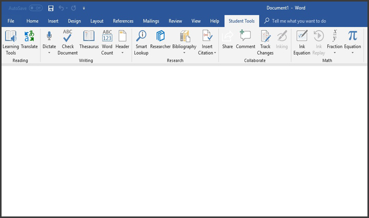

Tekstitöötlusprogramm on masin või arvutiprogramm, mis võimaldab arvutis tekste töödelda.
Tekstitöötluseks on teksti sisestus, redigeerimine, sortimine, liitmine, otsing, salvestus, kuvamine või printimine.
Rohkem infot

| Programm | Hind | Lihtsalt mingi tore võrdlusaspekt |
|---|---|---|
| LibreOffice Writer | Tasuta | 4/10 |
| Microsoft word | UT tudengile tasuta | 7/10, piltidega ei saa hakkama |